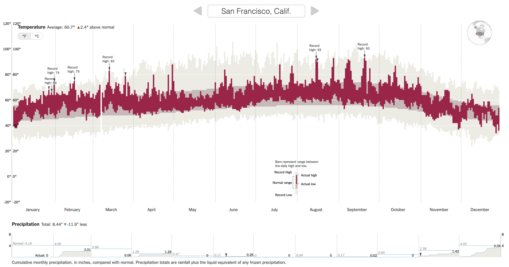
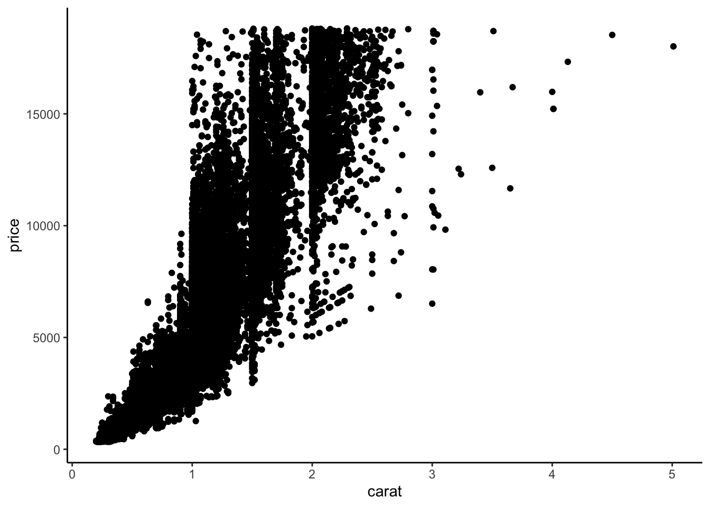
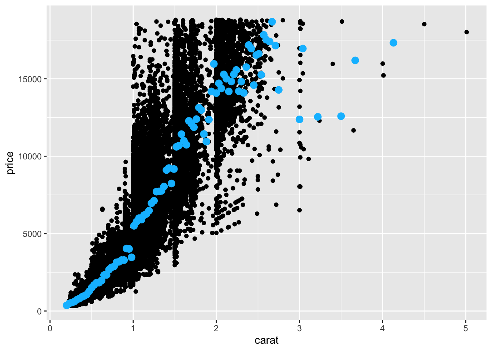
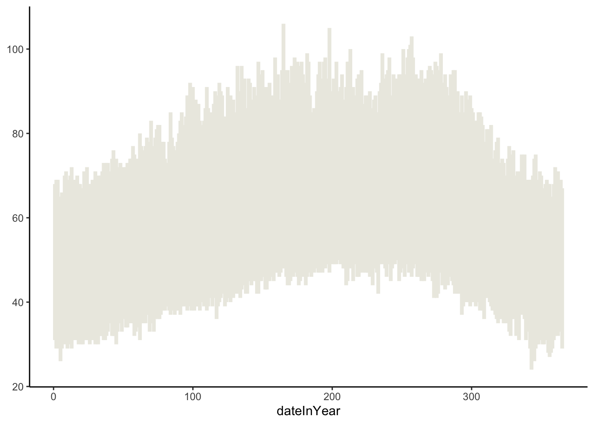
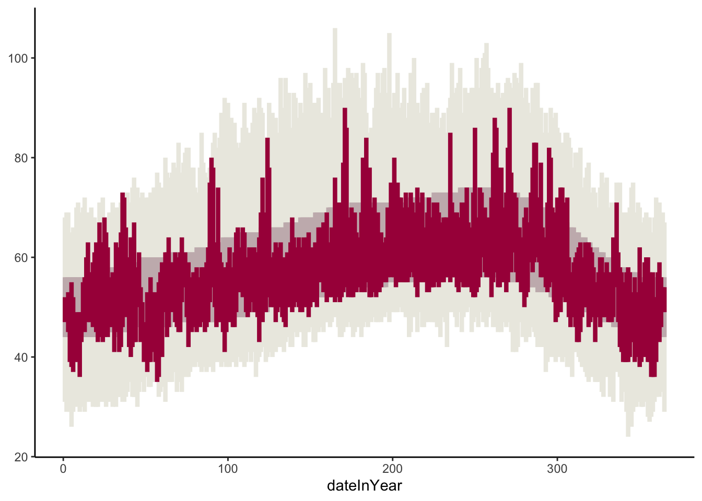
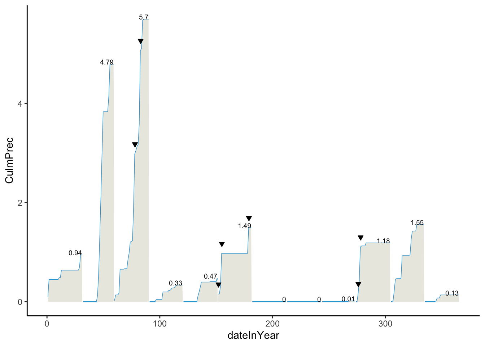

library(tidyverse)
weather <- read_csv("https://lmyint.github.io/212_fall_2023/data/sfo_weather.csv")Advanced Data Visualization in ggplot2
Learning goals
After this lesson, you should be able to:
- Navigate the ggplot2 reference page to find the functions needed to create a desired visualization
- Use the information on a function help page to construct desired plot features
- Scan the information in the Usage section to identify function arguments that must be set
- Understand how the function arguments work by using information in the Arguments section
- Use the information in the the Aesthetics and Examples sections to control plot appearance
- Identify when it would be necessary to use different
dataarguments within theggplot()andgeom_()layers
Setting up our reflection practice
Today is our start to cultivating a greater awareness about our habits with regards to:
- Figuring code stuff out without hand-holding from an instructor
- Creating a good environment in a work partnership
You will be keeping a Process and Reflection log to record your in-the-moment observations about your learning process and collaborative work. This log will give you a wealth of observations to draw from when writing your 3 major reflections at ~1 month in, mid-semester, and the end of the semester.
Directions:
- Navigate to this Process and Reflection log template.
- Follow the directions in the document to make your own copy and share it with me.
- Leave this document open during class. There will be moments to pause and reflect during class and at the end of class.
Case study: recreating a NYT visualization
You can download a template Quarto file to start from here.
We are going to recreate this NYT visualization on record setting temperatures by expanding our ggplot2 toolbox using data from San Francisco (SFO) in 2011.

First load the tidyverse package, and read in the data.
Class exercise 1: Examine the temperature visualization. What variables underlie the visualization, and how do they map to visual elements (e.g., position, size, shape, and color of the glyphs)?
We can explore the “Geoms” section of the ggplot2 reference page to find a geom that corresponds to the visual elements in the temperature plot.
Class exercise 2: Using both the small example visuals on the right and the names of the geom’s, brainstorm some possibilities for geom’s we might use to recreate the temperature visualization.
We need to explore further by opening up the geom reference pages to understand if a particular geom is suitable for our task. We’ll look at the geom_point documentation page to learn the process for reading a documentation page.
When looking at a help page, it is useful to first look at the Usage and Arguments sections.
The Usage section shows all of the possible inputs (arguments) to the geom–these are all of the ways that a geom can be customized. Just looking at the argument names can help give a hint as to what arguments might fit our needs.
The Arguments section explains in detail what each argument does and the possible values the argument can take. The mapping, data, and ... arguments will be the most commonly used by far.
mapping: This is the argument that is being used when you specify a plotsaesthetics (the code insideaes()).data: This is where you specify the dataset containing the variables that thegeomis using....: You will tend to use this for fixed aesthetics (ones that don’t correspond to a variable). For example, this is where you can set the color of all points (e.g., withcolor = "red") or the size of all points (e.g., withsize = 3).
A note about the data argument: Previously you have used one dataset per plot by specifying that as the first argument of ggplot(). For example, the code below makes a scatterplot of price vs. carat in the diamonds dataset, and the only data argument is in ggplot() (none in geom_point()).
data(diamonds)
head(diamonds)# A tibble: 6 × 10
carat cut color clarity depth table price x y z
<dbl> <ord> <ord> <ord> <dbl> <dbl> <int> <dbl> <dbl> <dbl>
1 0.23 Ideal E SI2 61.5 55 326 3.95 3.98 2.43
2 0.21 Premium E SI1 59.8 61 326 3.89 3.84 2.31
3 0.23 Good E VS1 56.9 65 327 4.05 4.07 2.31
4 0.29 Premium I VS2 62.4 58 334 4.2 4.23 2.63
5 0.31 Good J SI2 63.3 58 335 4.34 4.35 2.75
6 0.24 Very Good J VVS2 62.8 57 336 3.94 3.96 2.48ggplot(diamonds, aes(x = carat, y = price)) +
geom_point() +
theme_classic()
# Note that we can make the same plot by specifying the argument names explicitly:
ggplot(data = diamonds, mapping = aes(x = carat, y = price)) +
geom_point() +
theme_classic()Sometimes we may want to use more than one dataset in a plot. For example, we have a separate dataset that contains average prices of diamonds by carat:
head(diamonds_avg_price)# A tibble: 6 × 2
carat avg_price
<dbl> <dbl>
1 0.2 365.
2 0.23 486.
3 0.26 551.
4 0.29 601.
5 0.32 720.
6 0.35 801.We can use this separate diamonds_avg_price dataset in the geom_point() layer to add average price information to our scatterplot:
ggplot(diamonds, aes(x = carat, y = price)) +
geom_point() +
geom_point(data = diamonds_avg_price, aes(x = carat, y = avg_price), color = "deepskyblue", size = 3)
The Aesthetics section of a geom documentation page gives information on how the visual elements of the geom correspond to data. For example, the geom_point documentation page shows that the familiar x and y aesthetics are available. It also shows some new aesthetics like stroke.
We can use the same process to look at the geom_linerange documentation page and start off our temperature visualization with the record lows and highs:
ggplot(weather) +
geom_linerange(aes(x = dateInYear, ymin = RecordLow, ymax = RecordHigh), color = "#ECEBE3", linewidth = 1.5) +
theme_classic()
Class exercise 3: Add to your temperature visualization to also display the usual temperatures (NormalLow and NormalHigh), and actual 2011 temperatures (Low and High). Your plot should look like the one below. The tan color for the usual temperatures is "#C8B8BA", and the red color for the actual temperatures is "#A90248".

Let’s now try to recreate the visual demarcations of the months by adding vertical lines separating the months.
Class exercise 4: Brainstorm with your groups how we might draw those vertical lines. What geom might we use? What subset of the data might we use in that geom layer to draw lines only at the month divisions? One person from your group should write your ideas on the board.
Once ideas are up on the board, we’ll work through this together as a class.
Now let’s change the x-axis labels so that the month names display in the center of each month’s slice of the plot. (Note that R has built-in variables called month.abb and month.name that contain abbreviated and full month names.)
Class exercise 5: We will split into 3 groups to explore different approaches to this problem. After finding tentative solutions, each group should try out the solution in the temperature plot. Elect one speaker to summarize the group’s process and results.
AI group: This group will use ChatGPT and/or Google Bard. Record the chat prompts used and output given.
Google group: This group will just use Google search. Record search queries and your thought process in selecting which search results to look at first.
Documentation group: This group will only use the ggplot2 documentation page. You might use Ctrl-F or Command-F to search for relevant text on the main function reference page or use the “Search for” box in the top right.
After each group reports out, we will finalize this part of the plot together.
Practice
In pairs (randomly formed), you will go through the same steps as above for the precipitation data. Here, and throughout the course, we will be using the pair programming technique.
Pair programming background
In pair programming, two individuals use one computer and work together to solve the problem at hand. Each individual takes turns in one of two roles:
- Driver: The Driver is at the computer typing and speaking their thought process out loud.
- Navigator: The Navigator reviews all code that the Driver writes as it’s typed, guides the overall direction of the code (keeps the instructions in mind), and pulls up references.
Why are we using pair programming? Pair programming is used effectively in industry to speed up individual employee’s learning of a company’s codebase and reduce time wasted on fixing bugs.
Your task
Before diving in to plot creation, get to know your partner by telling each other about the general themes in your 12 favorite problems (FPs). Try to find some overlap in your themes and share one of your FPs that relates to that overlapping theme.
Work together until your precipitation plot looks as below.
- The
culmPrecvariable contains cumulative precipitation for the month up to the given day. - The
recordPvariable is a TRUE/FALSE indicator of whether a day was a precipitation record. These are marked by the downward pointing triangles. - The numbers on the plot indicate the total precipitation for the month. Do some searching about the
hjustandvjustoptions to adjust the alignment of the numbers. - The blue and tan colors are
"#32a3d8"and"#ebeae2".

When should the Driver and Navigator switch roles? For this exercise, you will switch roles once a particular plot layer (one geom) has been implemented correctly. You can send code back and forth via email or a direct message on Slack.
Stop to Reflect
As you pair program, be aware of your comforts and discomforts in the roles of driver and navigator. Pay attention to the comforts and discomforts of your partner. What could you do to support them in becoming more comfortable and confident in both roles?
Record Errors
Every time you run into a new error, record the error message and your process for fixing the error in the “Error Log” section of the Quarto file for these exercises.
Homework
Task: Using ggplot and other functions in R, recreate the original NY Times graphic to the greatest extent possible for you (which may be different for each of you).
- You will need to use reference pages and documentation to discover necessary tools. For example, you may want to Google search “ggplot multiple plots”. When looking through results, check publication dates and use newer references.
The following variables will be needed:
Record: A TRUE/FALSE indicator of whether a day was a temperature recordRecordText: A text description of the record temperature, if there was one (e.g., “Record High: 84”)RecordP: A TRUE/FALSE indicator of whether a day was a precipitation record
Minimum requirements for your graph: Create a graphic close to the one below. In your knitted HTML, the figure size should be big enough to see details, and the figure should have alt text.
Submission details: Submit the knitted HTML of the 02-adv-ggplot.qmd template from class on Moodle by midnight on Wednesday, 9/13.
How to cite AI and other resources: If you use AI tools like ChatGPT or Google Bard, please copy and paste all prompts and output into an “Appendix” section of this assignment. Also list any websites used in this Appendix.
Extra: If you’d like further practice, recreate the legend in the temperature graph that shows how the tan and red lines relate to record, normal, and actual highs and lows. (Note: I do not have a hidden expectation that you do this when I give feedback on your work.)